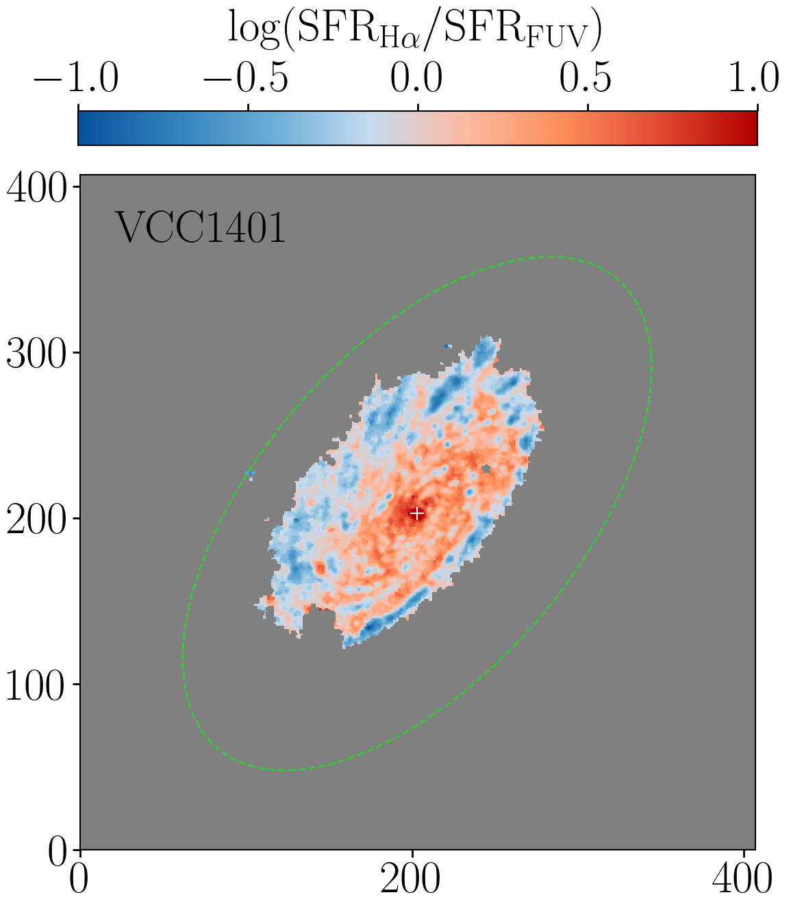

Resolved star formation morphologies in quenching galaxies
I am interested in studying galaxy star formation on local scales with the goal of indentifying signatures associated with mechanisms that may be driving the overall quenching of the galaxy. This is possible in fields such as the Virgo cluster with multi-wavelength, high-resolution photometry to allow spatially resolved SED fitting and empircal derivaitons of star formation rates on small scales. With the advent of data from instruments such as Euclid, Roman, and LSST, this will soon be possible in certain deep fields as well.
